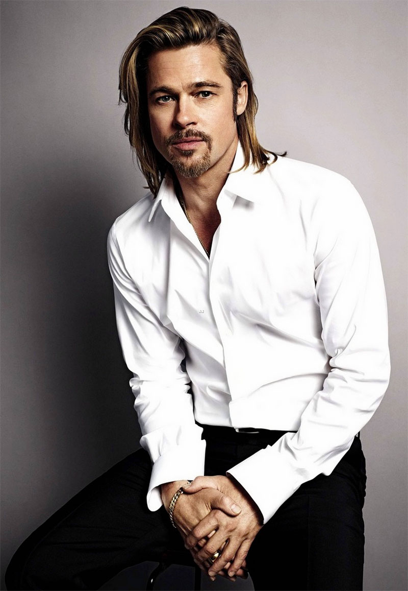

Brad Pitt was born on December 18, 1963 in Shawnee, Oklahoma and raised in Springfield, Missouri. His mother's name is Jane Etta Hillhouse. His father, William (Bill) Pitt, worked in management at a trucking firm in Springfield. He has a younger brother, Douglas (Doug) Pitt and a younger sister Julie Neal Pitt. At Kickapoo High School, Pitt was involved in sports, debating, student government and school musicals. Pitt attended the University of Missouri, where he majored in journalism with a focus on advertising. He occasionally acted in fraternity shows. He left college two credits short of graduating to move to California. Before he became successful at acting, Pitt supported himself by driving strippers in limos, moving refrigerators and dressing as a giant chicken while working for "el Pollo Loco".
 Source repository